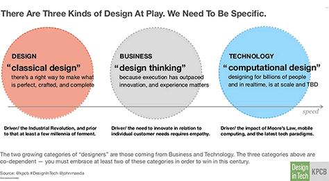

About a decade ago, people came to UX designers to solve creative challenges and help them with user interfaces. But, as the technological industry continues to change, theres a wider range of demands for a UX designer. A traditional education is useful, but it’s no longer enough.
In his recent report on the Design Industry, John Maeda states that design is a compromise of three things. They are classical design, design thinking, and computational design. (KPCB)
According to VentureBeat, this is an explanation of each category.
“Classical design is the education that designers currently receive in school, which is used in media like print and physical displays. ‘It’s art,’ he explained, saying that it will be around for centuries and will affect designers’ ability to be creative.
“Design thinking is geared [toward] those who are business focused. Those with this capability understand that, when execution has outpaced innovation, it’s time to explore how design can further shape the customer experience. Maeda also looked at universities and discovered that some business students sought out design courses, which he believes is good in order to create empathy.
“Lastly, computational thinkers are designers who have an understanding of algorithms and processes, especially those who can think about the customer experience in mobile apps, Internet-connected devices, autonomous vehicles, virtual reality, and other spaces.”
In order to combine these three fields of design, UX design becomes a collaborative effort. A combination of the three makes design a very powerful tool in many companies. They start to tackle problems through a design lens. One example of this is Airbnb. In a TED Talk with co-founder Joe Gebbia, he explains that their design systems reputation is what allowed them to gain the trust of so many people to share their homes with total strangers.